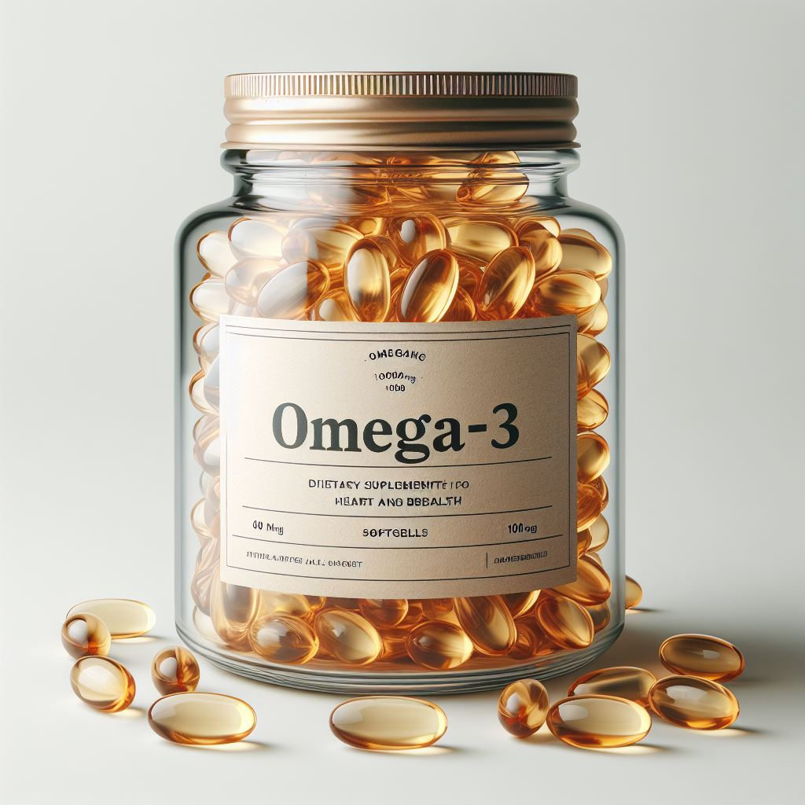

Омега 3-6-9
Омега 3-6-9 — это комплекс из самых важных для человеческого здоровья ненасыщенных жирных кислот. Организм не вырабатывает эти вещества самостоятельно, поэтому нуждается в их регулярном поступлении с пищей или добавками.
1) Омега-3:
- Нормализуют метаболизм, уровень глюкозы и холестерина в крови, препятствуя развитию сахарного диабета и появлению лишнего веса.
- Участвуют в синтезе серотонина, при их дефиците человек может впасть в депрессию.
- При регулярном употреблении возрастает энергичность, улучшается здоровье глаз, а также сердечно-сосудистая и мозговая деятельность.
- Помогают предупредить развитие болезни Альцгеймера и остеопороза, укрепляют волосы, ногти и кожу.
2) Омега-6:
- Укрепляют иммунитет.
3) Омега-9:
- Поддерживают правильный обмен веществ.
- Защищают сердечно-сосудистую систему.
- Стимулируют умственную деятельность.
Важно! Если вы планируете включить омега 3-6-9 в свой рацион, обязательно проконсультируйтесь с врачом и тренером, чтобы выбрать подходящий продукт и дозировку. Помните, что индивидуальные потребности могут различаться, и важно следовать рекомендациям специалистов.
Теперь вы знаете больше о омега 3-6-9! Если вас заинтересовал данный продукт, переходите по кнопке "Просмотр продукции" и подбирайте товар для себя!